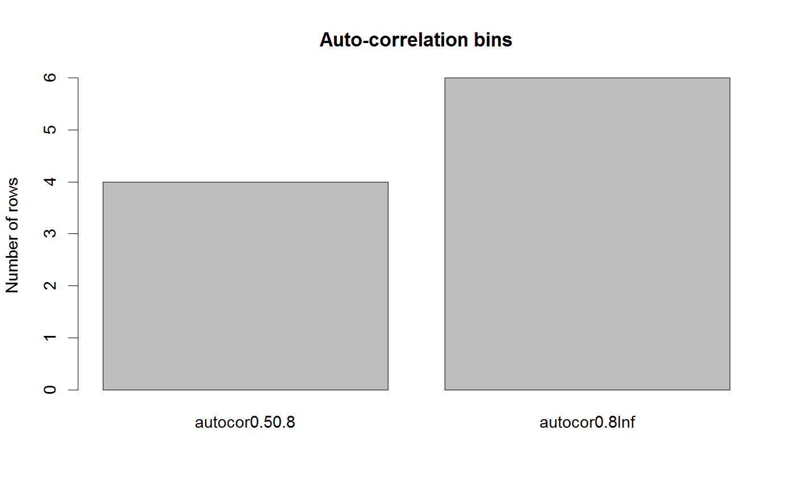

Memory is assessed either with the Hurst exponent or with the maximum auto- correlation (omitting lag zero). Hurst exponents are computed with function hurstexp in package pracma. The simple R/S Hurst exponent is selected.
binByMemory(x, thresholds = c(0.3, 0.5, 0.8), method = "autocor", d = round(ncol(x)/3))
| x | a matrix with objects as rows and time points as columns |
|---|---|
| thresholds | the thresholds by which to bin |
| method | autocor or hurst, computing the maximum auto-correlation (omitting lag=0) and the Hurst exponent, respectively |
| d | window size for Hurst exponent computation with function hurstexp |
list with row indices assigned to bins
The function returns an object that groups matrix row indices in different levels. Rows that could not be binned are classified in bin na.
#> [1] "Adjusting connectance to 0.02" #> [1] "Initial edge number 100" #> [1] "Initial connectance 1" #> [1] "Number of edges removed 89" #> [1] "Final connectance 0.0111111111111111" #> [1] "Final connectance: 0.0111111111111111"memBinned=binByMemory(ricker.out) memBinned.bars=c(length(memBinned$autocor0.8Inf),length(memBinned$autocor0.50.8)) names(memBinned.bars)=names(memBinned) barplot(memBinned.bars,main="Auto-correlation bins", ylab="Number of rows")